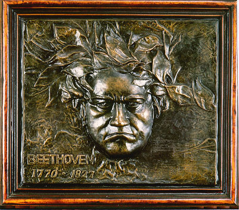

義助慰安婦 —— 李敖百件珍藏義賣藝術品（第65件） 品 名： F4. 貝多芬浮雕 預估價： 6 萬 成交價： 6 萬 說 明： 這是著名音樂家貝多芬的浮雕，是件很好的藝術品。你若愈了解貝多芬就會愈不喜歡他，因為他是個小器鬼。李敖個人很喜歡浮雕，因為看起來比平面的生動有趣，又比立體的含蓄。 
這是著名音樂家貝多芬的浮雕，是件很好的藝術品。你若愈了解貝多芬就會愈不喜歡他，因為他是個小器鬼。李敖個人很喜歡浮雕，因為看起來比平面的生動有趣，又比立體的含蓄。